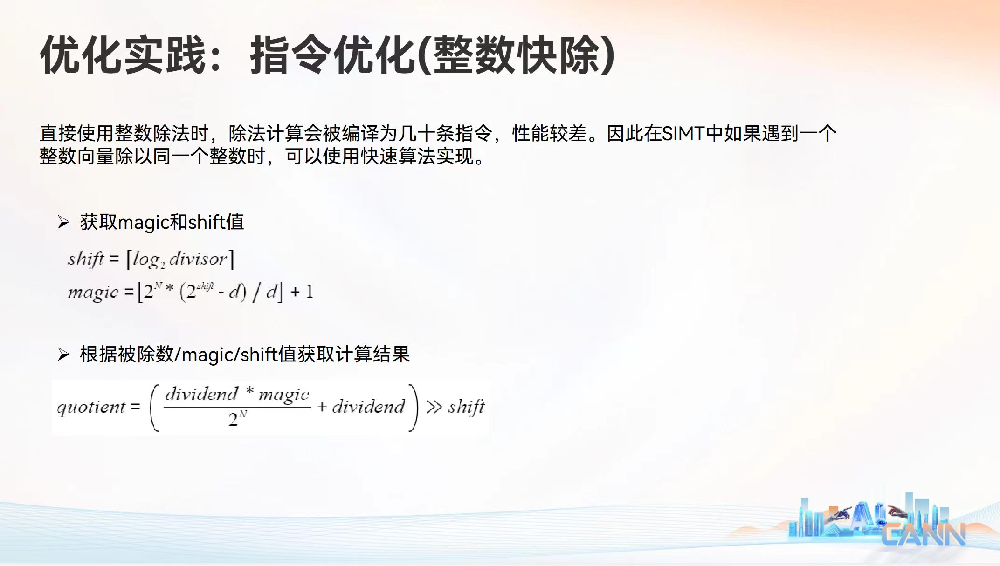

拆解华为的快速整数除法
编译原理, 体系结构

朋友发给我一个幻灯片，让我研究一下华为这个整数除法是什么原理。
本文将完整梳理该算法的执行步骤、核心代数推导过程，并解答其在底层硬件上的边界设计问题。
一、算法核心步骤总结
该算法将高延迟的除法运算严格拆分为两个阶段：预计算阶段（编译期或 Host 端完成）和运行时阶段（设备端硬件流水线执行）。
1. 预计算阶段（仅执行一次）
给定除数 \(d\)（已知常数）和硬件原生位宽 \(N\)（如 32 位），计算出两个关键的编译期常量：
- 偏移量 (shift)： \[shift = \lceil \log_2 d \rceil\]
- 魔法常数 (magic)： \[magic = \lfloor \frac{2^N \times (2^{shift} - d)}{d} \rfloor + 1\]
2. 运行时阶段（执行成千上万次）
当程序执行 quotient = dividend / d 时，底层硬件只需串行执行三条低延迟的基础指令。其完整公式等价为：
\[quotient = ( ((dividend \times magic) \gg N) + dividend ) \gg shift\]
- 高位乘法 (
mul.hi)： 即 \((dividend \times magic) \gg N\)。提取 64 位乘积的高 32 位。 - 加法补偿 (
add)： 将上一步结果 \(+ dividend\)，补偿因截断而丢失的魔数权重。 - 逻辑右移 (
shr)： 将加法结果 \(\gg shift\)，得到最终精确的商。
二、核心数学原理剖析
整数除法的本质是乘以倒数：\(x / d = x \times \frac{1}{d}\)。
由于整型寄存器无法存储小数 \(\frac{1}{d}\)，我们需要将其放大 \(2^K\) 倍，使其变成一个整数（即理想魔数 \(M_{true}\)），乘完之后再缩小回去（右移 \(K\) 位）。
为了保证计算结果在任何情况下都不会偏小（详见文末补充说明），我们必须对放大的倒数进行向上取整。因此，我们假设理想魔数 \(M_{true}\) 的定义为：
\[M_{true} = \lceil \frac{2^K}{d} \rceil\]
此时，除法运算被近似为： \[x / d \approx \frac{x \times M_{true}}{2^K}\]
既然确立了 \(M_{true}\) 的形式，接下来的核心问题是：放大倍数（缩放精度） \(K\) 到底需要多大，才能保证在全定义域下计算绝对正确？
三、精度边界推导：为什么 \(K\) 的取值必须是 \(N + shift\)？
令向上取整引入的小数误差为 \(\epsilon\)（\(0 \le \epsilon < 1\)），则理想魔数可以表示为：
\[M_{true} = \frac{2^K}{d} + \epsilon\]
对于任意被除数 \(n\)，其实际除法结果可写为商 \(q\) 和余数 \(r\)（即 \(n = q \times d + r\)）。带入我们的近似除法公式中，机器实际计算的中间值为：
\[\frac{n \times M_{true}}{2^K} = \frac{n \times (\frac{2^K}{d} + \epsilon)}{2^K} = \frac{n}{d} + \frac{n \times \epsilon}{2^K} = q + \left( \frac{r}{d} + \frac{n \times \epsilon}{2^K} \right)\]
为了保证最终右移截断（向下取整）后的结果正好等于 \(q\)，必须保证括号内的小数部分在最极端的最坏情况（Worst-case）下也严格小于 1。我们寻找极端值：
- 最大余数：\(r = d - 1\)
- 最大误差：\(\epsilon \to 1\)
- 最大被除数：\(n \to 2^N\)
代入临界条件不等式：
\[\frac{d - 1}{d} + \frac{2^N}{2^K} < 1\] \[1 - \frac{1}{d} + \frac{2^N}{2^K} < 1\] \[\frac{2^N}{2^K} < \frac{1}{d}\]
两边取倒数并取以 2 为底的对数：
\[2^{K - N} > d \implies K - N > \log_2 d \implies K > N + \log_2 d\]
由于移位量必须是整数，我们将对 \(\log_2 d\) 的向上取整定义为 shift（即 \(shift = \lceil \log_2 d \rceil\)）。 因此，能压制住全范围被除数误差的最小安全 \(K\) 值为：
\[K = N + shift\]
至此，理想魔数的完整定义变为：\(M_{true} = \lceil \frac{2^{N+shift}}{d} \rceil\)。
四、硬件限制：魔数的溢出与截断补偿
明确了 \(M_{true}\) 之后，工程实现上遇到了一个严峻的硬件问题：它一定需要 33 位（33-bit）来存储。
根据 shift 的定义，\(2^{shift}\) 是刚好大于或等于 \(d\) 的最小 2 的幂次，必然满足：
\[1 \le \frac{2^{shift}}{d} < 2\]
带入 \(M_{true}\) 的定义（以位宽 \(N=32\) 为例）：
\[M_{true} = \lceil 2^{32} \times \frac{2^{shift}}{d} \rceil \ge 2^{32}\]
在二进制中，\(2^{32}\) 是一个最高位（第 33 位）为 1 的数。32 位的物理寄存器无法直接存下它。
截断与补偿策略： 为了解决溢出，我们将魔数“砍掉最高位”，只存入低 32 位数据，这便是代码中实际使用的 magic：
\[magic = M_{true} - 2^{32}\]
因为乘数变小了（少了 \(2^{32}\)），所以在运行时阶段的高位乘法后，我们得到的结果比预期少了恰好一个被除数的值。这就是为什么在底层的指令流水线中，必须额外加上一步 + dividend（加法补偿），用以补回被砍掉的最高位权重。
五、公式推导：从理论魔数到工程公式
最后一步，我们需要将理论上表达的 \(magic = M_{true} - 2^N\)，转化为仅用标准 32 位整型运算就能在编译期算出的纯显式公式。
Step 1：代入理论定义 \[magic = \lceil \frac{2^{N+shift}}{d} \rceil - 2^N\]
Step 2：将整数 \(2^N\) 移入向上取整符号内部（利用 \(\lceil X \rceil - C = \lceil X - C \rceil\)） \[magic = \lceil \frac{2^{N+shift}}{d} - 2^N \rceil\]
Step 3：通分合并并提取公因式 \[magic = \lceil \frac{2^{N+shift} - 2^N \times d}{d} \rceil = \lceil \frac{2^N \times (2^{shift} - d)}{d} \rceil\]
Step 4：转换为通用的“向下取整” 在主流编程语言中，整数除法默认行为是向下取整（Floor \(\lfloor \dots \rfloor\)）。对于非整数 \(X\)，有 \(\lceil X \rceil = \lfloor X \rfloor + 1\)。 因为该算法针对的是非 2 的幂次的除数 \(d\)，括号内结果必有小数，我们得以安全转换： \[magic = \lfloor \frac{2^N \times (2^{shift} - d)}{d} \rfloor + 1\]
至此，我们得到了与 PPT 完全一致的编译期常量计算公式。
六、补充说明：为什么要“向上取整”而不是“向下取整”？
在第二节中，我们确立基础模型时，假设了 \(M_{true} = \lceil 2^K / d \rceil\)。为什么必须是 \(\lceil \dots \rceil\) 而不是 \(\lfloor \dots \rfloor\)？
这是出于“宁可多算，绝不少算”的误差控制原则。
如果使用向下取整：\(M_{true} = \lfloor 2^K / d \rfloor\)，则估算的倒数严格小于真实的 \(1/d\)。 当遇到能被完美整除的情况（例如 \(x = d\)）时： \(x \times \frac{M_{true}}{2^K}\) 的计算结果就会略微小于 1（例如 0.9999...）。 经过硬件移位操作（本质是向下取整）后，商会被截断成 0，而正确的答案应该是 1。
只要产生微小的负向误差，就会导致整除边界上的结果全面崩溃。因此，必须使用向上取整，引入可控的正向误差 \(\epsilon\)，并在推导缩放精度 \(K\) 时（第三节）通过提升位数将其彻底压制在安全范围内。